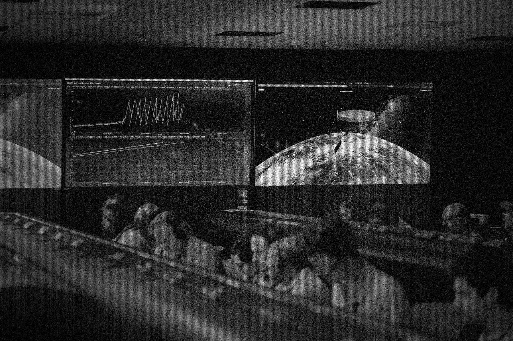
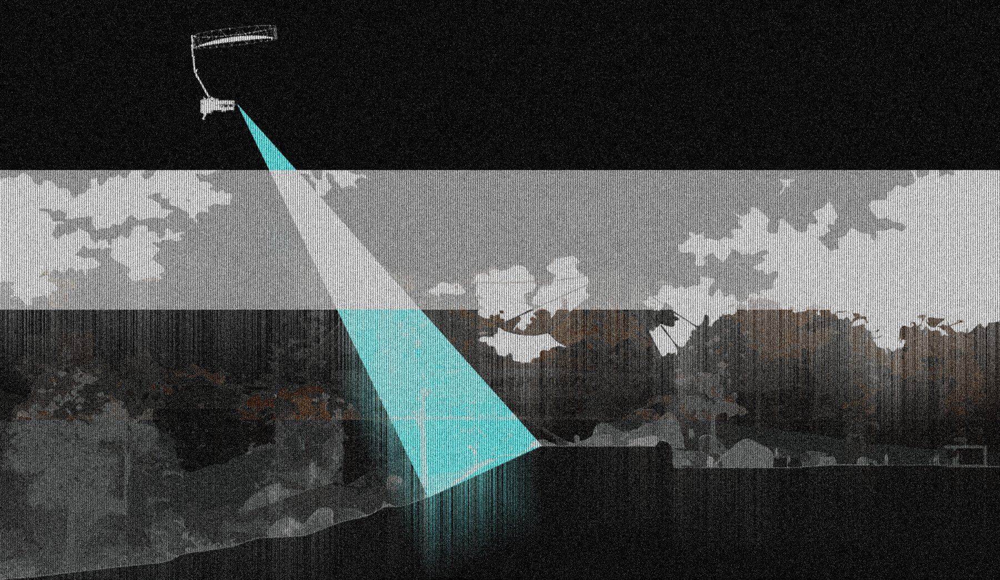
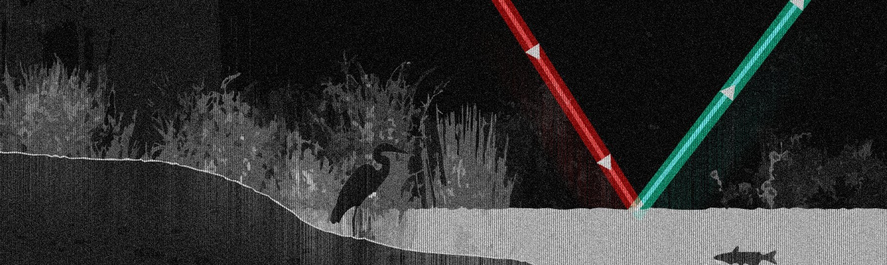
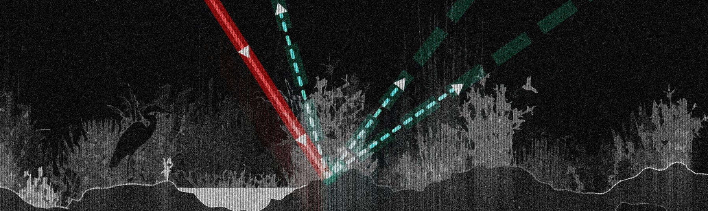
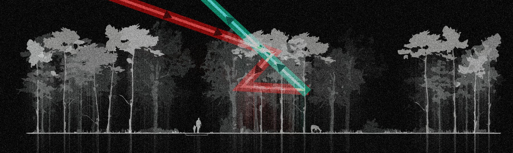
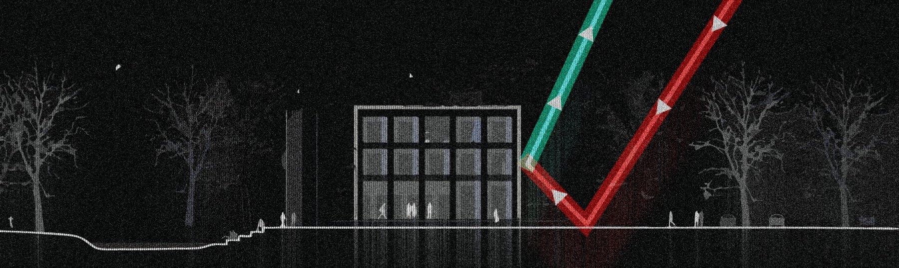

ThroughNISAR’s Lens
Radar, not a camera
NISAR maps Earth every 12 days, through clouds and darkness. We make its signal readable.
Take NISAR apart
Click any part to see what it does. Take it apart, then put it back together.

Unfolding the reflector
Engineers follow the 12 m dish as it opens: tension and rotation counts on one screen, NISAR in 3D on the other.

It brings its own light
A normal satellite camera needs sunlight and a clear sky. NISAR shines its own microwave pulse at the ground and listens for the echo, so it works at night and straight through clouds.
Every surface echoes differently
NISAR shines its own microwave pulse at the ground and listens for the echo. What comes back depends on what the pulse hits.
Lake

Calm water bounces the pulse away like a mirror, so almost nothing comes back. Lakes look dark on radar.
Mirror bounce · almost no echo · darkBare field

Rough soil scatters the pulse in many directions and sends a little of it back.
Rough surface · some echo · brownForest

Trees scatter the pulse around inside their leaves and branches before part of it comes back.
Volume scattering · echo changes polarisation · greenCity

Walls and streets bounce the pulse straight back toward the satellite.
Double bounce off walls · strong echo · yellowRadar colours, translated
A radar image of the flooded Amazon in Peru, the kind of picture NISAR makes. Drag the seam to see what each colour means.
- Open waterBlack on radar: calm water bounces the pulse away. The river and the lakes.–
- Tropical forestGrey-green: leaves and branches scatter the pulse around.–
- Low or floating plantsDark green: grasses and plants on the water send back a weak echo.–
- Flooded forestRed and pink: water under the trees bounces the pulse back up the trunks, a strong echo.–
Pacaya-Samaria National Reserve, Peru, 2013. UAVSAR airborne radar, an example of NISAR-style imagery. Image: NASA/JPL-Caltech · PIA26112. A teaching aid, not a land-cover map.
Through the clouds
In the Amazon, NISAR sees what cameras can't: forest cleared, riverbanks dug up for gold, and a flood draining from under the trees.
Relief: Miguel Valenzuela (@mappdoutofficial), from GMTED2010 elevation data
Now, closer to home
Places in Poland where the land is changing.
Relief: Miguel Valenzuela (@mappdoutofficial), from SRTM elevation data